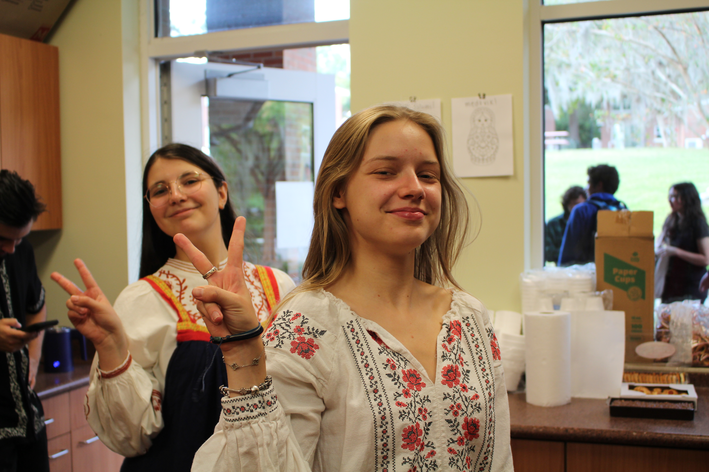
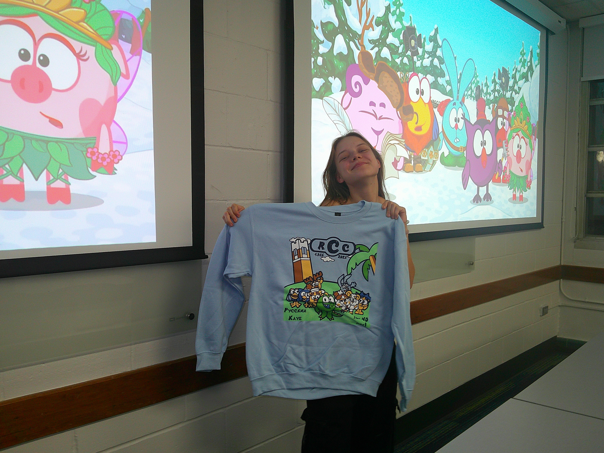
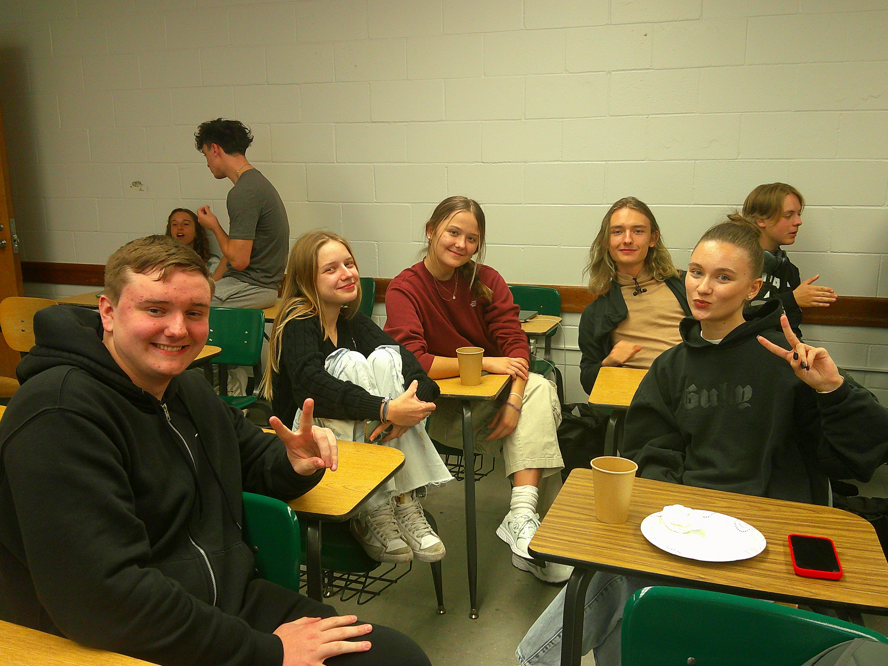
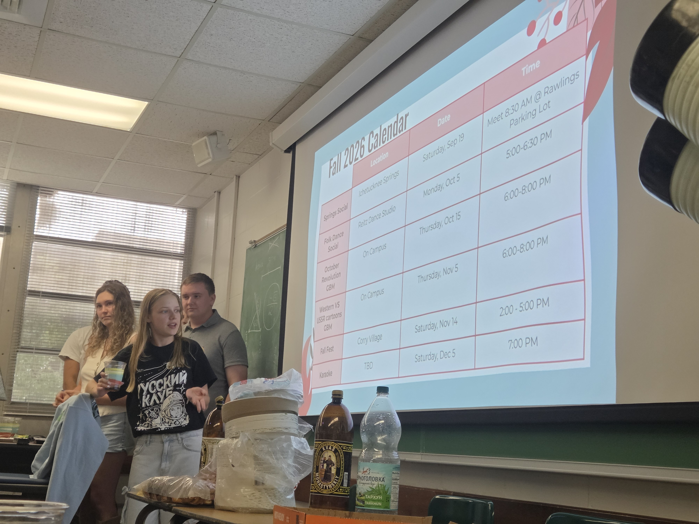
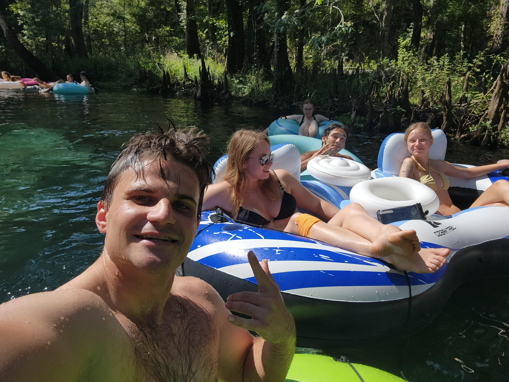
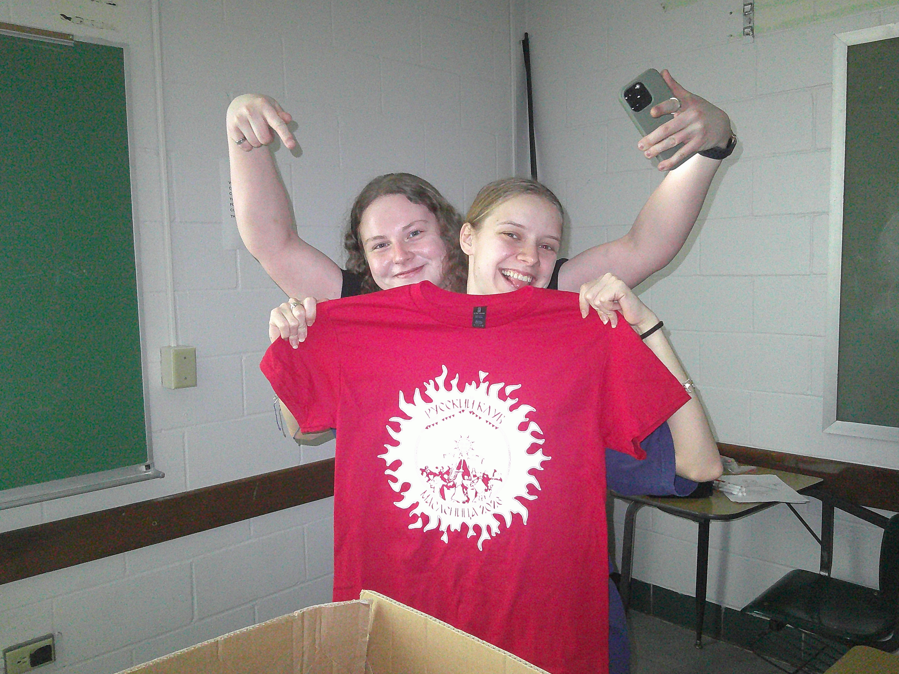

Russian Culture Club, University of Florida
A student organization focused on Russian language, culture, community, and cross-cultural engagement at the University of Florida.
READ MORERussian Culture Club, University of Florida
I joined the Russian Culture Club as a member, taking part in cultural events, social activities, and club programs while getting involved in the campus community.
As Outreach Chair, I led the club’s outreach and promotion across Instagram, Facebook, and physical advertising. I created social media content and promotional campaigns, coordinated collaborations with other cultural organizations, and helped organize the annual Russian Culture Festival with 200+ attendees.
I also promoted social events and club activities with participation of up to 100 students, while building relationships with other student organizations to expand the club’s reach and encourage cross-cultural engagement.
As President, I oversee club operations, events, finances, and member activities. I organize internal club work, coordinate members, assign responsibilities, and communicate with university departments and student organizations.
I also manage club funding and prepare financial plans for the 2026–2027 academic year, while continuing to plan cultural events and collaborations across campus.




